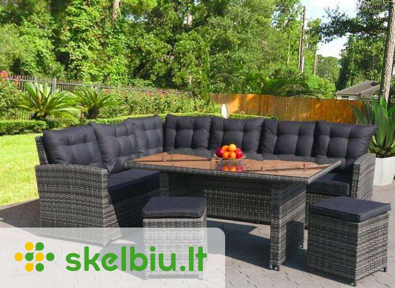

Svetainės baldai internetu | Deinavos baldai
Deinavos
baldai +370 683 44332 I-V 9.00–18.00 e-parduotuve@deinava.lt Rask saloną Pirkimo – pardavimo taisyklės Kokybės ir priežiūros taisyklės Privatumo politika Pristatymo sąlygos Prekių grąžinimo taisyklės Pirkimas išsimokėtinai Apmokėjimas Paskyra Prisijungti/Registruotis Meniu Svetainės Svetainės komplektai Minkšti baldai Sekcijos Vitrinos - indaujos Komodos Spintos Spintelės Spinta - baras Lentynos Baro stalai Kėdės Stalai ir staliukai Veidrodžiai Vaikų Vaikų baldų komplektai Lovos Čiužiniai Antčiužiniai Pagalvės Pufai Sėdmaišiai Spintos Lentynos Rašomieji stalai Kėdės Komodos Spintelės TV staliukai Prieškambario Prieškambario komplektai Minkštasuoliai Spintos Komodos Spintelės Drabužių kabyklos Veidrodžiai Batų dėžės Lentynos Biuro Spintos Komodos Minkštasuoliai Sofos Spintelės Stalai Kėdės Lentynos Žurnaliniai staliukai Virtuvės Virtuvės baldų komplektai Valgomojo komplektai Stalai Kėdės Miegamojo Miegamojo komplektai Lovos Minkštasuoliai Čiužiniai Antčiužiniai Pagalvės Spintos Komodos Stalai ir staliukai Spintelės Lentynos Veidrodžiai Skrynios Stiliai Šiuolaikinis Skandinaviškas Relax Klasikinis Modernus Moderni klasika Prabangus Provanso Retro Industrinis Kolekcijos ALEZI ARKO ARLES AFINA ALTE ASPEN ASTORIJA AVO AVIGNON AZURO BAHA BALTICA BARSELONA BELFORT BELVEDER BLANCO BRAVO CASTEL COMO CONTRE CONTI COUNTRY DALLAS DOMINO DOMINI DROP ELMO FAN FLORENCJA GLOSS GRANDE HYGA IQ JUNONA KAMA KENDO KOMBI KRISTAL KSAWERY KUBU LEONARDO LIBERTI LOCARNO LUCAS LUMENS LUNA MADISON MARSEL MILANO MOSAIC MONTENEGRO NEPTUN OLIWIER OL-TAR OMEGA OPTIMAL ORLANDO ORFEUSZ OSLO PALERMO PICOLO POLARIS PORTI PRATO RAWENO RIVA SAVONA SELENĖ SHELVE SIENA SKANDI SOFIJA TEDDY TIFFANI TRAFFIC TORINO (Taranko) TORINO VASILISA VELVET VELLE VERONA (NEMAN) VERONA (Taranko) VERSAL VIA ZEFIR WERSAL(Taranko) Prekės sandėlyje Visi baldai Antčiužiniai Baro kėdės Baro stalai Batų dėžės Čiužiniai Darbo stalai Daiktadėžės Drabužių kabyklos Dviaukštės lovos Foteliai Gėlių stovai Indaujos Indaujos - vitrinos Komodos Kėdės Knygų lentynos Kompiuteriniai stalai Lentynos Lovos Minkšti kampai Minkštasuoliai Miegamieji foteliai Naktiniai staliukai prie lovos Naktinės spintelės Pagalvės Pakabinamos lentynos Pastatomos lentynos Pufai Rašomieji stalai Reglaineriai Sekcijos Sėdmaišiai Skrynios Sofos Sofos - lovos Spinta - baras Spintelės Spintos Stalai Supamieji krėslai Taburetės Tualetiniai - kosmetiniai staliukai TV staliukai / TV komodos Vitrinos Žurnaliniai staliukai Veidrodžiai Ąžuoliniai Odiniai EKO odos Natūralios odos Gobeleniniai Mediniai Metaliniai Natūralaus medžio Stikliniai Kieti Moduliniai / sisteminiai Minkšti Baldų komplektai Praktiški / funkcionalūs / ergonomiški Transformuojami Korpusiniai Apie mus Apie mus „Deinava“ baldų salonai Ekspertai pataria Susisiekite su mumis Rekvizitai Informacija Pirkimo – pardavimo taisyklės Kokybės ir priežiūros taisyklės Privatumo politika Pristatymo sąlygos Prekių grąžinimo taisyklės Pirkimas išsimokėtinai Apmokėjimas Prisijungti/Registruotis Svetainės Svetainės komplektai Minkšti baldai Sekcijos Vitrinos - indaujos Komodos Spintos Spintelės Spinta - baras Lentynos Baro stalai Kėdės Stalai ir staliukai Veidrodžiai Svetainės Vaikų Vaikų baldų komplektai Lovos Čiužiniai Antčiužiniai Pagalvės Pufai Sėdmaišiai Spintos Lentynos Rašomieji stalai Kėdės Komodos Spintelės TV staliukai Vaikų Prieškambario Prieškambario komplektai Minkštasuoliai Spintos Komodos Spintelės Drabužių kabyklos Veidrodžiai Batų dėžės Lentynos Prieškambario Biuro Spintos Komodos Minkštasuoliai Sofos Spintelės Stalai Kėdės Lentynos Žurnaliniai staliukai Biuro Virtuvės Virtuvės baldų komplektai Valgomojo komplektai Stalai Kėdės Virtuvės Miegamojo Miegamojo komplektai Lovos Minkštasuoliai Čiužiniai Antčiužiniai Pagalvės Spintos Komodos Stalai ir staliukai Spintelės Lentynos Veidrodžiai Skrynios Miegamojo Stiliai Šiuolaikinis Skandinaviškas Relax Klasikinis Modernus Moderni klasika Prabangus Provanso Retro Industrinis Miegamojo Kolekcijos Prekės sandėlyje Visi baldai Deinava — Svetainės Svetainės Svetainės komplektai Minkšti baldai Sekcijos Vitrinos - indaujos Komodos Spintos Spintelės Spinta - baras Lentynos Baro stalai Kėdės Stalai ir staliukai Veidrodžiai Pristatymo laikas Yra sandėlyje Išmatavimai mm Ilgis — Plotis — Aukštis — Filtruoti
Svetainės baldai
Svetainė yra išskirtinė namų erdvė, kurioje priimame svečius, su artimaisiais susitinkame per šventes, o galbūt susirenkame vakarais su šeima, atsipalaiduojame, mėgaujamės aromatingos kavos puodeliu bei knyga, žaidžiame stalo žaidimus ir kt. Nenuostabu, jog svetainei keliami aukšti reprezentatyvumo reikalavimai, o neretai svarbus ir patogumas. Tad išrinkti svetainės baldus – užduotis ne iš lengvųjų. Žemiau rasite daugiau informacijos apie mūsų svetainės baldų asortimentą bei patarimus, kurie padės išsirinkti.
Filtruoti 1 2 ... 10 ... 20 ... 30 ... 40 ... 50 ... 60 ... 62 Rikiavimas: Standartinis Brangiausia viršuje Pigiausia viršuje N Kampas VESTERN 8L.20м.5АR Kaina nuo: 1217,64 € N Kampas BELADŽIO 3мL.90.1R Kaina nuo: 2692,97 € Stalas GRAND MINI Kaina nuo: 146,94 € Stalas NOVA 88,00 € 54,56 € Stalas RONDO 2 413,00 € 256,06 € Stalas RONDO 384,00 € 238,08 € Stalas ASTER Kaina nuo: 110,98 € Stalas CLEO 140,00 € 86,80 € Stalas BELATO 271,00 € 168,02 € Pufas su atlošu KAPRIZ 18 Kaina nuo: 48,18 € TV Staliukas TURYN 2 266,00 € 164,92 € TV staliukas TURYN 1 181,00 € 112,22 € N Pufas ALFA 01 90,00 € 65,70 € Spintelė LYON 08 70,00 € 43,40 € Komoda IMOLA 03 252,00 € 156,24 € Spintelės prailginimas - VIEVIEN 25 73,00 € 54,75 € N Kampas EVOLUTION 2,5FL-EM-1BB-1BBS-BOK/R Kaina nuo: 2240,00 € N Kampas MOTION 2.5FL-E-1BB-BK-1.5BBEL-BOK/R Kaina nuo: 2568,00 € N Kampas QUADRO 2,5FL-EM-BB-1BBEL-BOK/R Kaina nuo: 2513,00 € N Kampas OZZIE 2,5L-E-1BB-1BB-LR Kaina nuo: 2995,00 € N Kampas LORENZO LL-1BBEL-PLT TRAPEZ-1BBEL-BOK/R Kaina nuo: 2895,00 € N Kampas GENESIS 2,5FL-E-2,5BB-LR Kaina nuo: 2398,00 € POLARIS 05 864,00 € 648,00 € N Sofa TURISMO 3 Kaina nuo: 917,00 € N Sofa TURISMO 2 Kaina nuo: 829,00 € N Komplektas TURISMO 3 2 1 Kaina nuo: 2289,00 € N Kampas PRESTIGE 2,5FL-E-1BB-PL-1BBEL-BK-LR Kaina nuo: 3724,00 € N Fotelis TURISMO 1 Kaina nuo: 543,00 € N Sofa-lova FARGO 3DL Kaina nuo: 718,00 € N Fotelis FARGO 1 Kaina nuo: 249,00 € N Kampas FARGO Kaina nuo: 861,00 € N Kampas LOUIS LL-2,5R Kaina nuo: 1238,00 € Stalas LATINA 40 800,00 € 600,00 € Komoda LATINA 45 943,00 € 707,25 € N PUFA P1 Kaina nuo: 219,00 € N PUFA P2 Kaina nuo: 208,00 € N PUFA P3 Kaina nuo: 137,00 € N PUFA P4 Kaina nuo: 132,00 € N PUFA P5 Kaina nuo: 84,00 € N Fotelis EASY 1 MN Kaina nuo: 613,00 € 1 2 ... 10 ... 20 ... 30 ... 40 ... 50 ... 60 ... 62Mūsų asortimentas
Platus pasirinkimas suteikia daug galimybių įgyvendinti net įmantriausias vizijas, tad džiaugiamės galėdami Jums pasiūlyti pavydėtiną svetainės baldų asortimentą:
· natūralios medienos ir natūralios odos baldai ;
· minkšti baldai: minkštasuoliai, minkšti kampai, sofos, foteliai ir pufai;
· kėdės: įprastos, supamosios, natūralios medienos, baro;
· stalai ir staliukai: žurnaliniai, TV, natūralios medienos, valgomojo, baro;
· sekcijos ir vitrinos;
· spintos ir spintelės;
· lentynos: pakabinamos, pastatomos, knygų;
· veidrodžiai ir gėlių stovai.
Platus svetainės baldų spektras leis net išrankiausiam klientui atrasti tai, kas sužavės, pavergs ir idealiai tiks Jūsų svetainėje ar konkrečios idėjos įgyvendinimui. Svetainės baldai skiriasi spalvine gama (juodi, balti, mėlyni, raudoni ir t.t.), medžiagomis ( mediniai , odiniai , blizgūs aksominiai, gobeleniniai ir t.t.), iš kurių pagaminti, dizaino sprendimais , matmenimis , todėl rasite tobulai derančius bet kokiam interjero stiliui.
Mūsų asortimente – ne tik pavieniai kokybiški svetainės baldai, kuriuos galite derinti tarpusavyje ir kurti norimas kompozicijas, bet ir svetainės baldų kolekcijos. Rinkitės natūralios medienos išskirtines kolekcijas, jaukumo nestokojančias, klasika alsuojančias ar originalias, elegantiškas, dailias ar bet kurias kitas iš labai plataus spektro. Pasirinkę sofas ir fotelius iš tos pačios kolekcijos lengvai susikomplektuosite populiarųjį 3+2+1 komplektą svetainei. Korpusiniai / moduliniai baldai (kartais pirkėjų vadinami sisteminiais baldais) suteikia progą komplektuoti derinius, nepriekaištingai atitinkančius individualius norus.
Atsakingas gamintojų pasirinkimas leidžia užtikrinti geriausią pirkimo patirtį mūsų klientams. Siūlome „ML“, „Szynaka“, „Neman“, „Pinskdrev“ ir kitų gamintojų baldus svetainei.
Puikus spektras svetainės baldų pagal interjero stilius: klasikiniai, šiuolaikiniai / šiuolaikiški, modernūs, modernios klasikos, prabangūs, karališki, industriniai, Provanso, retro, senoviniai, vintažiniai, Chesterfield tipo, skandinaviški.
Dažniausiai pasirenkami baldai svetainei
Kalbant apie populiariausius baldus svetainės zonai, neabejotinai laurus skina sofos (ypač populiarios su miegojimo funkcija), minkšti baldai (odos, eko odos, gobeleniniai ir kt.), kampai, foteliai, žurnaliniai bei TV staliukai, sekcijos ar knygų lentynos. Bet šalia populiariųjų, jei tik yra pakankamai erdvės, įsikuria ir supamieji krėslai, pufai, nedidelės komodos ar spintelės, papildomi elementai, pavyzdžiui, gėlių stovai. Nemažą mūsų asortimento dalį sudaro pirkėjų mėgiami kieti, tvirti mediniai baldai – natūralaus medžio baldai iš ąžuolo ar kitos medienos labai vertinami ir tinka kone kiekvienam interjerui.
Kaip pasirinkti svetainės baldus: kas svarbu?
Pateikiame kelis patarimus, į kuriuos rekomenduojame atsižvelgti, renkantis baldus šiai namų zonai.
· Pirmiausia nuspręskite, kokia bus svetainės funkcija: ar tai bus erdvė tik priimti svečius, o gal svetainėje vakarus leis visa šeima? Pirmuoju atveju svetainė taps Jūsų namų vizitine kortele, o štai antruoju turės būti ne tik stilinga, bet ir patogi, jauki visiems šeimos nariams. Reprezentatyvioje erdvėje gali įsikurti geri, gražūs, stilingi, prabangūs odiniai baldai, nedidelis kavos staliukas, originali ar klasikinė sekcija ar vitrininė spinta, kurioje bus matyti daiktai, puošybos elementai, kuriuos norite demonstruoti. O šeimos vakarams reikalingi kiek kitokie baldai, pavyzdžiui, patogi (kitaip ji praras savo vertę) sofa, foteliai įsitaisyti prieš televizorių, didesnis žurnalinis staliukas stalo žaidimams, taip pat reikia palikti daugiau laisvos erdvės judėjimui. Svarbu ir baldų priežiūros ypatumai, jų valymo paprastumas, nes sutikime, kasdien naudojami svetainės baldai priežiūros reikalaus daugiau. Tad baldų minkšta dalis turėtų būti iš kokybiško audinio, kuris lengvai prižiūrimas, neimlus nešvarumams.
· Jei svetainė bus ir svečių priėmimo, ir šeimos poilsio zona, baldų, žinoma, joje bus daugiau, tad svarbus svetainės baldų išdėstymas . Tad renkantis tikslinga identifikuoti patalpos centrą , kuriuo neretai tampa židinys, jei toks yra, televizorius ar žurnalinis staliukas, o kiti baldai dėstomi aplink jį. Toks sprendimas suteikia kryptingumo planuojant, kokius baldus įkurdinti svetainėje. Stokojant vietos verta pasinaudoti baldų-transformerių privalumais.
· Prieš keliaudami į saloną atlikite namų darbus nubraižykite kambario planą, tiksliai išmatuokite atstumus ir popieriuje ar kompiuterio ekrane susikurkite savo svetainės viziją. Toks planas padės rinktis tikslingai, sistemingai, leis įvertinti, kokių baldų reikia, kokie gabaritų diapazonai galimi ir pan. Tai susiaurins baldų paieškos lauką ir leis išvengti klaidų. Be to, bus aiškesnis būsimo kambario vaizdas.
· Nenumokite ranka į spalvas tai vienas esminių aspektų. Beje, jos ne tik atlieka pagrindinę savo funkciją, bet gali būti puikiu įrankiu, norint vizualiai padidinti erdvę, kas labai aktualu mažoms svetainėms. Dar vienas patarimas mažoms patalpoms nesirinkite tamsių baldų , nes jie optiškai mažina, tarsi sunkina erdvę.
· Įvertinkite ir spalvų daromą įtaką , pavyzdžiui, švelnios, pastelinės spalvos ramina, o ryškios aktyvina, teikia energijos, kelia nuotaiką. Tai reikia suderinti su svetainės paskirtimi ar ji bus svečių priėmimo, draugų susibūrimų vieta, ar jaukus poilsio kampelis visai šeimai. Svetainei, kuriai priskiriate kelias funkcijas, tikslinga rinktis neutralių spalvų baldus. Ir nemanykite, kad pastelinės spalvos atrodys nuobodžiai pasirinkę originalius, ryškius aksesuarus, pavyzdžiui, pagalvėles, vazas, gėlių vazonus, stovus, erdvei suteiksite reikiamų išraiškingų akcentų.
· Medžiagos ne mažiau svarbu. Nesusigundykite pigiais svetainės baldais iš nekokybiškų medžiagų. Prioritetą teikite tvirtą ir ilgaamžį karkasą turintiems baldams bei kokybiškiems audiniams. Tai svarbu ir dėl reprezentatyvios išvaizdos, funkcionalumo išlaikymo ilgalaikėje perspektyvoje, ir dėl paprastesnės baldų priežiūros.
· Harmonija jos nepamirškite! Baldų salone Jums gali patikti labai daug baldų: vienos kolekcijos sofa bus neįtikėtinai komfortiška, o štai kitos kolekcijos žurnalinis staliukas kaip tik toks, kokio reikia Jums, dar kitos kolekcijos sekcija tobulai atitiks Jūsų poreikius, nors jos spalva nederės prie kitų baldų... Bet neskubėkite pirkti ir atminkite, kad visi baldai turi derėti tarpusavyje , sudaryti vieningą koncepciją ir harmoningą svetainės interjerą.
Svetainės baldai pagal interjero stilių
Koks interjeras kuriamas namuose – tai labai svarbu. Svetainės baldų dizainas turi atitikti Jūsų namuose kuriamą stilių. Tai reikšminga gairė, padėsianti renkantis baldus šiai namų erdvei.
· Butams, mažesniems namams ar tiesiog tiems, kurie nenori daug daiktų namuose, populiaru pasirinkti minimalistinį stilių . Jei toks vyrauja ir Jūsų būste, nepersistenkite su baldais – jų nereikia daug, o esantieji turėtų pasižymėti lengvumu, nedideliais gabaritais. Tiks funkcionali sofa, stiklo elementų turinčios sekcijos, vitrinos, staliukai.
· Jei negalite atsispirti daugelio mėgiamam praktiškam, bet dailiam skandinaviškam stiliui , prioritetą teikite baltiems, pilkšviems baldams, atviroms lentynoms, natūraliems audiniams, paprastoms formoms, šviesaus medžio ir lengvos konstrukcijos baldams. Tokiame interjere tobulai įsilies supamasis krėslas, gyvumo suteiks ryškūs, originalūs akcentai.
· Klasikiniam interjerui rinkitės baldus iš medžio masyvo, išsiskiriančius solidumu, alsuojančius prabanga. Masyvus kampas, odiniai baldai, didelė sekcija ar komoda, foteliai. Tokiam interjerui rinkitės prabangius, masyvius, natūralių, kokybiškų medžiagų baldus.
· Jei svetainėje vyrauja svajingas, romantiškas Provanso stilius , rinkitės šviesius, pastelinių spalvų svetainės baldus iš medžio, natūralius audinius, elegantiškas sekcijas, komodas su stiklo elementais. Šiam stiliui nevenkite grakščiomis formomis išsiskiriančių dekoro elementų – veidrodžių, vazų, gėlių stovų, minkštus baldus būtinai papildykite jaukumo suteikiančiomis pagalvėlėmis.
· Moderniam stiliui rinkitės šviesaus kolorito svetainės baldus, pasižyminčius ritmiškomis linijomis, taisyklingomis formomis, kuriančius šaltumo, tvarkos įspūdį. Tinkamiausios medžiagos – oda, stiklas, natūralus medis.
Tai keli populiarūs interjero stiliai, bet, nepriklausomai nuo to, koks dizainas vyraus Jūsų svetainėje, tai yra kertinis aspektas, lemiantis, koks svetainės apstatymas baldais tinkamiausias.
Kur pirkti svetainės baldus?
Jei ieškote kokybiškų, funkcionalių svetainės baldų konkurencinga kaina, užsukite į „Deinavos baldai“ salonus – platus asortimentas leis įgyvendinti kiekvieno viziją. Mūsų salonai įsikūrę:
· Vilniuje (PC BIG, Baldų namai „Skraja“),
· Kaune („Urmas“),
· Klaipėdoje (PC „Minijos baldų centras“),
· Elektrėnuose (Rungos g. 8).
Jei neturite galimybės atvykti į fizines pardavimo vietas, kur parduodami mūsų baldai, ne bėda – nauji, kokybiški svetainės baldai internetu mūsų el. parduotuvėje laukia Jūsų dėmesio. Čia toks pat puikus pasirinkimas, prie visų gaminių pateiktos kainos, aprašymai, todėl rinktis bus paprasta. Negana to, el. parduotuvė – tarsi galerija, su prekių foto, o realūs baldų vaizdai lengvina pasirinkimo procesą.
Norintys mokėti pigiau gali pasinaudoti akcija – patraukli nuolaida leis mažesnėmis investicijomis įsigyti kokybiškus baldus namams.
Galite pirkti išsimokėtinai – siūlome patrauklias sąlygas.
Mus kokybiški svetainės baldai pasiekia iš Lenkijos, Rusijos, Baltarusijos, Lietuvos bei Kinijos.
Gaukite naujausius pasiūlymus pirmi! Jūsų el. pašto adresas Užsisakyti Ačiū! Deinavos baldai –
nes jaukiuose namuose gyventi gera.
Deinava, UAB
Rungos g. 8, LT-26109 Elektrėnai
+370 683 44332
e-parduotuve@deinava.lt
Apie mus
Apie mus „Deinava“ baldų salonai Ekspertai pataria Susisiekite su mumis RekvizitaiInformacija
Pirkimo – pardavimo taisyklės Kokybės ir priežiūros taisyklės Privatumo politika Pristatymo sąlygos Prekių grąžinimo taisyklės Pirkimas išsimokėtinai ApmokėjimasPaskyra
Prisijungti/Registruotis© 2020 Deinava, UAB. Kopijuoti ir platinti svetainėje esančią informaciją draudžiama.
Mūsų svetainėje naudojami slapukai, kad užtikrintume jums teikiamų paslaugų kokybę. Tęsdami naršymą jūs sutinkate su Deinava slapukų politika Susipažinau